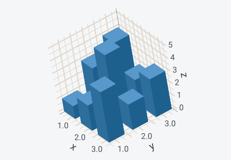
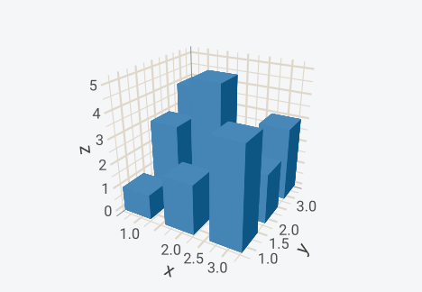
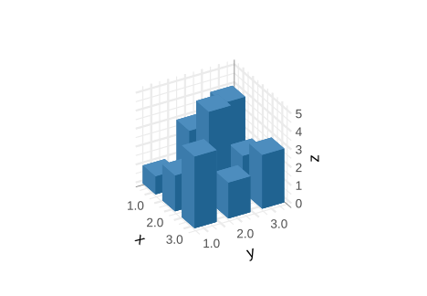
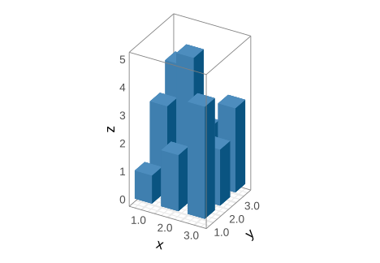
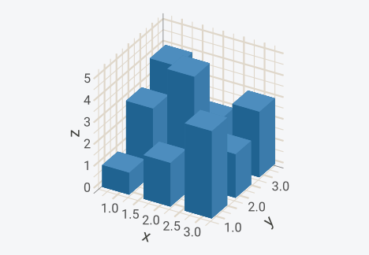
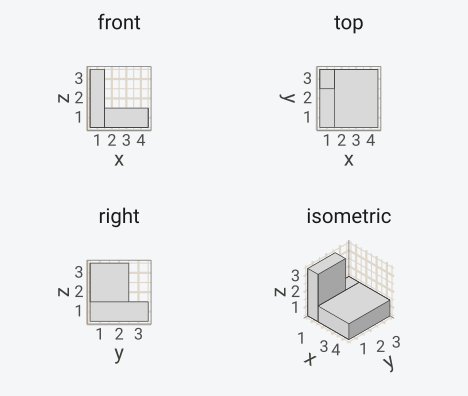
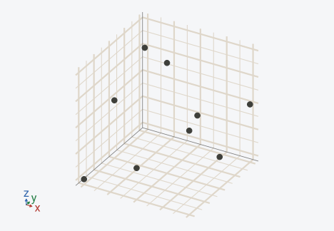
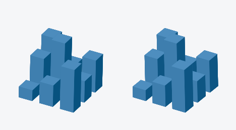
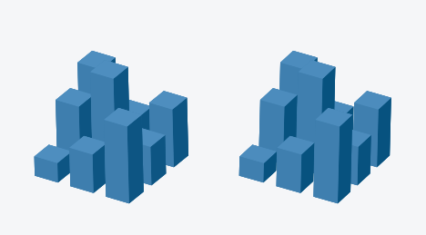
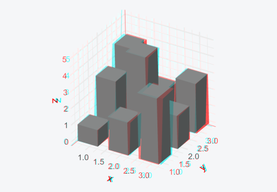

Camera controls choose the direction from which a scene is viewed. Framing controls the bounds used to fit that view on the page. Installation is covered in Get started.
d <- expand.grid(x = 1:3, y = 1:3)
d$z <- c(1, 2, 4, 3, 5, 2, 4, 2, 3)
p <- ggplot(d, aes(x, y, z = z)) +
geom_col_3d(fill = "#2E6F9E", width = 0.65, depth = 0.65)Angles
Azimuth rotates the camera around the vertical axis. Elevation raises the view above the horizontal plane. Roll rotates the image around the viewing direction. All three angles use degrees.
p + coord_3d(azimuth = -30, elevation = 35, roll = 10)
Projection
Orthographic projection keeps the apparent size of an object
independent of its distance from the camera. Perspective projection
makes nearer objects appear larger. The field of view is set in degrees
with fov; distance controls the camera’s
distance.
p + coord_3d(projection = "perspective", azimuth = -60,
elevation = 25, fov = 35)
The target argument gives the point the camera looks at
as fractions along the expanded x, y and z ranges. Its default is the
centre of that box. Increase zoom to enlarge the view
within the selected frame.
Framing a rotating view
The default frame fits the current view. An azimuth frame reserves bounds for rotation around the vertical axis at the current elevation. A sphere frame reserves bounds for arbitrary rotation. Use a common frame when a sequence of views should retain its scale.
p + coord_3d(azimuth = -30, elevation = 30, frame = "azimuth")
Aspect and the box
The aspect gives the three side lengths of the model box. The default
makes the three sides equal. Set aspect = "data" to use the
transformed data ranges. Panes are the faces drawn behind the data; axes
and box edges can be selected separately.

Lighting changes the colours used to draw surface faces. Its direction can be expressed in camera coordinates or data coordinates. Use camera space to keep lighting tied to the view.
p + coord_3d(light = light_3d(light_directional(c(1, 1, 2), space = "camera")))
Several views of one scene
facet_views_3d() repeats the scene in one panel per
view, like the views of a technical drawing. The default gives front,
top and right views next to an isometric one;
layout = "third_angle" or "first_angle"
arranges them by the drawing conventions, and a named list gives views
of your own.
block <- expand.grid(x = 1:4, y = 1:3, z = 1:3)
block <- block[block$z == 1 | (block$x == 1 & block$y < 3), ]
ggplot(block, aes(x, y, z = z)) +
geom_voxel_3d(fill = "grey80", colour = "grey20") +
coord_3d() + facet_views_3d()
When the axes are left out,
guides(orientation = guide_triad_3d()) draws a small set of
x, y and z arrows that turn with the camera, and
annotation_north_3d() draws a north arrow along a given
direction.
ggplot(d, aes(x, y, z = z)) + geom_point_3d(size = 3) +
coord_3d(axes = character()) + guides(orientation = guide_triad_3d())
Stereo pairs
Stereo output renders the scene from two eye directions. Each eye turns by half the separation about the image’s vertical axis while looking at the same target. The target lies in the page plane, with nearer geometry appearing in front of it. Both eyes share the same magnification.
p + coord_3d(axes = character(), panes = character(), box = "none",
stereo = stereo_3d("pair", separation = 5))
Pair mode places the left-eye image on the left for parallel viewing or a stereoscope. Cross mode reverses their order for cross-eyed viewing. Each facet gets its own eye pair. The separation is an angle in degrees.
p + coord_3d(axes = character(), panes = character(), box = "none",
stereo = stereo_3d("cross", separation = 5))
Anaglyphs
An anaglyph combines the two views into colour channels for coloured glasses. The default filters are red for the left eye and cyan for the right. Each eye image is reduced to luminance, so mapped colour scales communicate brightness in this mode. A plot with a colour or fill scale produces a warning.
p + coord_3d(stereo = stereo_3d("anaglyph", separation = 5),
backend = backend_3d("raster", dpi = 240))
Vector and hybrid output use device multiply compositing when available. Raster output composites the two eye images per channel; devices without multiply support also use that raster composite and require ragg. Interactive viewing uses the central camera in a browser. Intrinsic stereo needs separately configured observers and orientations for each eye in Inside the Thurston geometries.